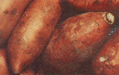
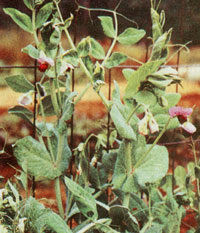

Peat pots, plastic flats, foam cups we've tried most of the traditional systems for starting seedlings. But last year we experimented with soil blocks, and now you won't find us using any other method! The blocks are easy to make and very inexpensive, and they work wonderfully. There are several mail-order sources for the little machines that produce these cubes; a four-blocks-at-a-time model costs under $20 and should last a lifetime. And we've had excellent results using commercial potting soil with our block maker instead of the costly mixes that are "specially formulated" for soil blocks.
We have run into one problem, though: Top watering causes erosion damage to the blocks, no matter what medium we use. You can get around this by using misters, but then you have to water quite frequently.
We think bottom watering is the way to go. Put absorbent cloth under the soil blocks and stick one end of the cloth into a container of water. The material will act as a wick, absorbing moisture and bringing it to the bottom of the blocks.
Our particular arrangement (which, admittedly, is difficult to move) consists of two-inch soil blocks on an old cookie sheet. One end of a thin cloth diaper runs under the blocks, while the other end rests in a waterfilled bread pan that sits just below the cookie sheet. No doubt you could easily make a more attractive and portable unit from scrap wood and plastic cookware. The important point is that a diaper-or similar absorbent cloth-works just as well as the expensive capillary matting sold by horticultural supply houses.
When using cloths for bottom watering, make sure they're wet before you add the soil blocks. And don't let the water containers go dry! You'll probably need to add liquid only once every few days-no more daily watering or hourly misting!
No-trench asparagus? Are there better ways to transplant asparagus crowns than the tried-and-true, but truly laborious, deeptrench method? Connecticut investigators have tried planting one-year-old crowns of Mary Washington asparagus in the usual trenches . . . directly on the soil surface and covered with 3"-high mounds . . . and just below the top of 8"-high raised beds. After the first growing season, the crowns in the beds and those in the mounds had a significantly better survival rate than the ones in trenches . . . and more spears per crown, to boot! Time will tell how long-term yields compare among the three methods.
Blueberries love peat! Adding organic matter to heavy, mineral-laden soil is a "must" for promoting good establishment and growth of newly planted blueberries. But not all sources of organic matter are equal. According to Georgia experimenters, peat is a better soil amendment for blueberries than pine bark and far superior to sawdust. (However, two quarts of peat added to each planting hole worked just as well as four quarts did.) And Mississippi researchers have discovered that water-holding gel products are not beneficial. So use peat with blues for best results.
Stop damping-off. Damping-off, the destruction of young seedlings by soil organisms, is perhaps most commonly due to Pythium debaryanum and Rhizoctonia solani fungi. Standard recommendations for controlling the problem include using sterile growing media, applying fungicides, improving drainage and ventilation, and even watering with dilute chamomile tea. Botanists in India have announced another preventive (at least for damping-off due to R. solani): Simply add organic matter. Their research shows that adding organic materials at the rate of 1% by weight to fungus-infected growing media significantly inhibits damping-off of seedlings. Plant materials with a high carbonto-nitrogen ratio (such as straw) were most effective.
Rotate your sweet potatoes! Plan now to rotate your plots of sweet potatoes. Researchers in Louisiana report that old plant residues reduce growth of future vine cuttingsapparently by preventing proper nodulation.
Don't plant peas in compacted soil! Garden peas are very sensitive to soil conditions-yields can be greatly reduced if they are grown in compacted soil. Experiments in England suggest that recultivating a compacted seedbed to a depth of four inches before planting will restore yields to those matching loose-soil levels.
Healthy Harvest lists over 300 organizations concerned with sustainable agriculture and horticulture. It's available for $6.95 postpaid from Healthy Harvest, 1424 16th St. N.W., Suite 105, Washington, DC 20005 . . . . For an introduction to fruit growing by biodynamic methods (which use fertilizers and pesticides made from natural animal, plant, and mineral materials), take a look at the 40-page Iduna Fruit Tree Care Program: A BioDynamic Spray and Cultivation Schedule, $5.50 postpaid from Iduna, P.O. Box 1582, Sag Harbor, NY 11963 . . . . The perfect guide to help you plan for continuous bloom from early spring into fall is "Sequence of Bloom of Perennials, Biennials, and Bulbs," Cornell University Extension Information Bulletin 196 ($1.60 postpaid from Distribution Center, 7 Research Pk., Cornell University, Ithaca, NY 14850). This bulletin is designed for use in the Northeast, but can be helpful in other areas as well .... Gardening with Children is a delightful guide to "learning while growing," and a bargain at only $3.05 (postpaid) from Brooklyn Botanic Garden, 1000 Washington Ave., Brooklyn, NY 11225.
EDITOR'S NOTE: Greg and Pat Williams raise most of their own food on a small farm and publish HortIdeas, a fine newsletter on gardening research and products (available for $10 a year from G. & P. Williams, Rt. 1, Box 302, Gravel Switch, KY 40328).
|
 |
 |
|